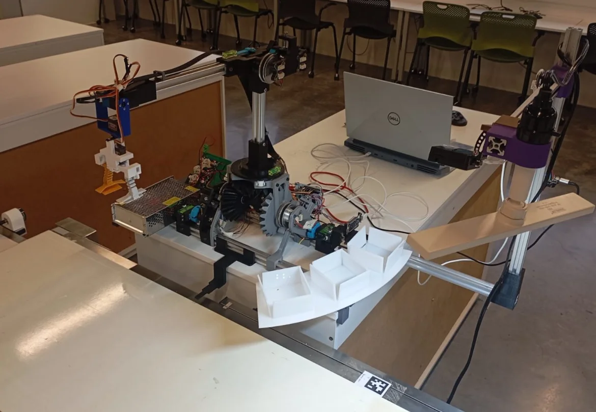

Tesis · UVG 2026Thesis · UVG 2026Brazo de 5 GDL que clasifica piezas en una línea de empaque5-DOF arm that sorts parts on a packaging line
Una cámara identifica cada pieza con un modelo YOLO entrenado por mí; el brazo calcula la cinemática inversa, la intercepta sobre la banda en movimiento y la deposita en su contenedor. Cinemática y control escritos desde cero en C/C++, sin ROS ni OpenCV.
A camera identifies each part with a YOLO model I trained; the arm solves its own inverse kinematics, intercepts the part on the moving belt and drops it in its bin. Kinematics and control written from scratch in C/C++, with no ROS or OpenCV.
5grados de libertaddegrees of freedom
0.905mAP50 del modelo de visiónvision model mAP50
≤ 0.35°error articular finalfinal joint error
3microcontroladores coordinadoscoordinated MCUs
- C/C++
- Python
- STM32
- Portenta H7
- ESP32
- YOLO11-seg
- Inventor
- PID / PD